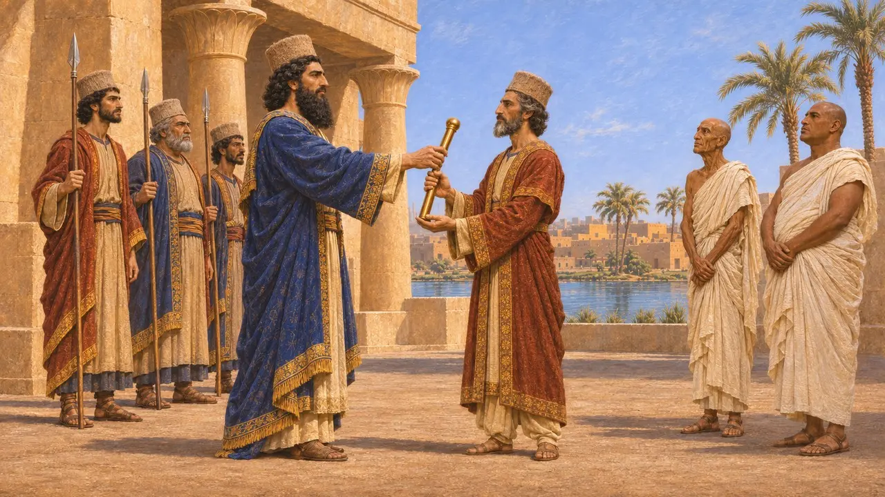
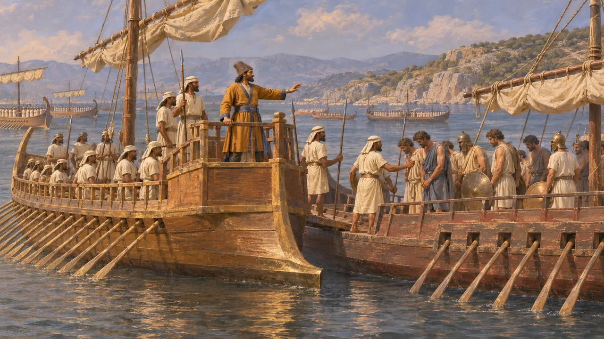
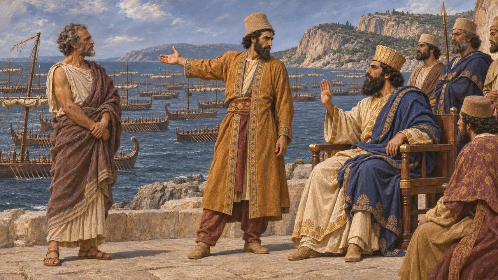
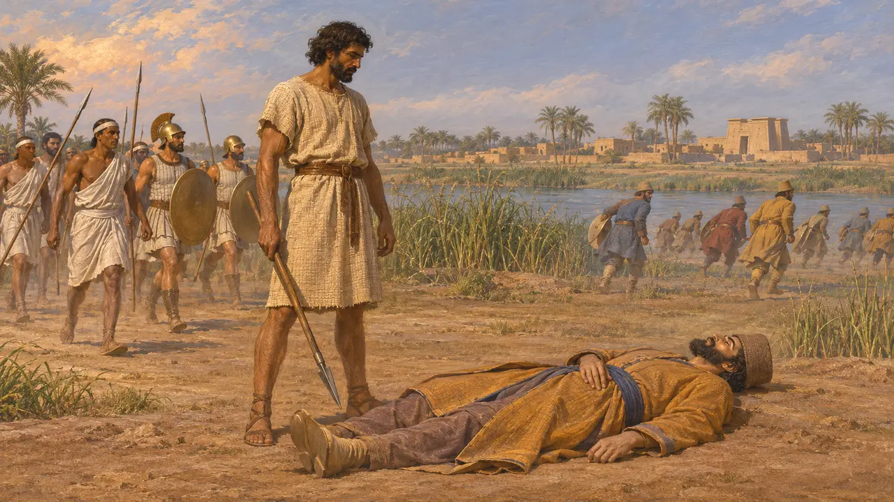
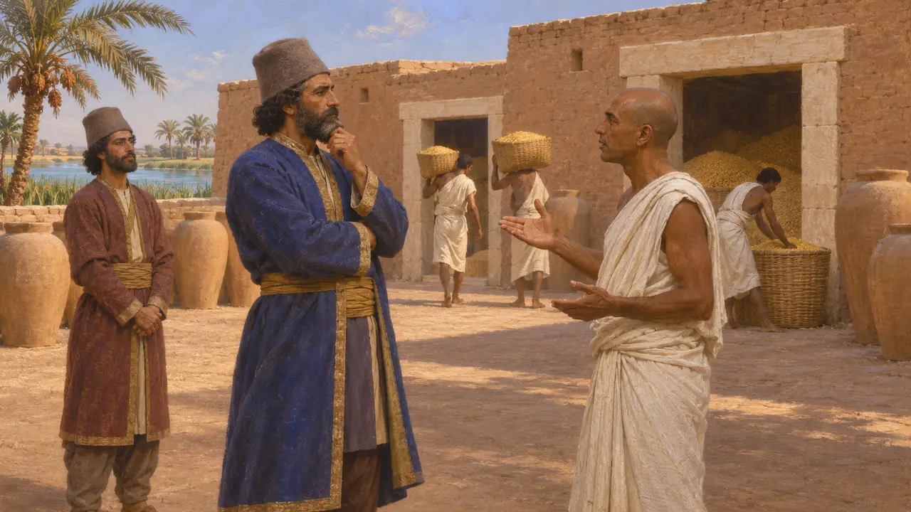

아카이메네스
다리우스의 아들로, 이집트의 사트라프이자 크세르크세스의 제독. 기원전 460년경 사망
아카이메네스는 다리우스와 아토사의 아들로, 크세르크세스의 친동생이었다. 크세르크세스 치세 초 이집트의 반란이 진압된 뒤 그는 이집트를 다스렸고, 기원전 480년 그리스 침공 때 이집트 함대를 이끌었다. 훗날 그는 이집트에서 반란자 이나로스와 싸우다 전사했다.
게임에서: 게임의 연대기는 그를 크세르크세스의 친형제이자 이집트의 사트라프로서 이집트 함선 200척을 이끈 제독이며, 함대를 나누는 데 반대한 인물로 소개한다. 이는 주요 사료인 헤로도토스와 일치한다.


이집트 함대의 제독
고대의 전승헤로도토스는 크세르크세스의 함대에 이집트 함선이 200척 있었다고 헤아리며, 그 지휘관으로 아카이메네스를 꼽는다. 그는 이복형제 아리아비그네스와 함께 페르시아 제독 넷 가운데 한 명이었다. 헤로도토스에 따르면 아르테미시온에서 대왕 편에서 가장 잘 싸운 것은 이집트인이었으며, 그리스 함선 다섯 척을 승무원째 나포했다.
Herodotus 7.89; 7.97; 8.17


이나로스의 반란에서 맞은 죽음
분쟁 중헤로도토스에 따르면 리비아인 이나로스가 아카이메네스를 죽였으며, 그는 파프레미스에서 아카이메네스와 함께 쓰러진 페르시아인들의 두개골을 언급합니다. 크테시아스는 이 지휘관을 아카이메니데스라 부르며 아르타크세르크세스 1세의 형제로 삼습니다. 디오도로스는 그를 대왕의 숙부 아카이메네스라 합니다. 투키디데스와 디오도로스는 아테네가 반란군을 도운 일을 서술하며, 기원전 460년 또는 459년경이라는 연대는 지금도 논쟁 중입니다.
Herodotus 3.12; 7.7; Ctesias, Persica; Diodorus 11.74; Thucydides 1.104

그리스 중심의 시각
분쟁 중아카이메네스에 관해 알려진 것은 거의 모두 그리스 저술가들에게서 나온 것이며, 그들은 그리스와의 전쟁이라는 관점에서 그를 바라보았다. 그의 이집트 통치는 약 20년간 이어졌지만, 당대의 현존 문서에는 흔적이 거의 남아 있지 않다. 따라서 그가 어떻게 통치했는지에 대한 현대의 서술은 대부분 아케메네스 왕조의 이집트 행정 전반으로부터 추론한 것에 기대고 있다.
P. Briant, From Cyrus to Alexander, 2002
출처
- Herodotus, Histories 3.12, 7.7, 7.89, 7.97, 7.235-237, 8.17
- Ctesias, Persica (as summarised by Photius)
- Diodorus 11.74
- Thucydides 1.104
- P. Briant, From Cyrus to Alexander, 2002